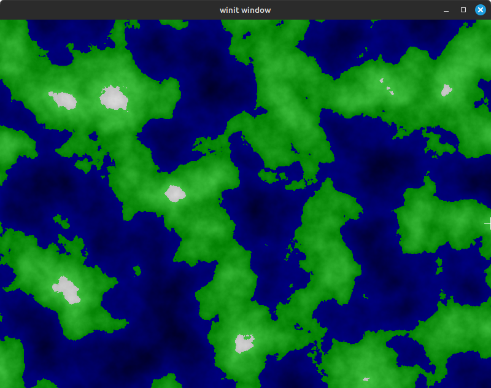

Introduction
Welcome to A Whimsical Tour of Intermediate Rust Programming!
In this book, we're going to build a fun, useless, but rewarding project to better understand Rust, beyond the usual toy projects you'll find in many learning resources.
We're going to build a procedural terrain generator and viewer!

This book walks Rust programmers through several areas which might still be a bit murky after finishing The Book and possibly the Rustlings exercises. We'll cover a variety of topics that I have personally found challenging to grasp, without scouring the web for the odd and sometimes obscure tips and tricks.
You don't need to be a Rust master to enjoy and learn from this tour. In fact, I'll only be assuming that you've either read The Book or a similar guide (like Programming Rust), but perhaps you haven't had a chance to use all the things you've read about yet.
Prerequisites
See the Chapter 0 page for a full list, but if you're comfortable writing small Rust programs, you're probably good to go.
A note about CUDA
This project covers GPGPU programming, via the CUDA library. There are other options for GPGPU programming, such as writing kernels via wgpu and the custom WebGPU shader language wgsl, but I prefer to code the kernels in Rust.
We will be writing the generator for CPU first, so you'll still be able to enjoy the book even if you don't have a CUDA device.
If you don't have access to an nVidia device that supports CUDA, you are free to browse Chapters 4 and 5 without actually running the code. There are a few CUDA emulators out there, but since I haven't tried them, I'm not going to recommend anything here. So proceed with caution if you go this route, but it's definitely an option.
What we'll cover on the tour
We're going to be building up a fun little graphics application from the ground up in this tour. Along the way, we'll cover things like:
Chapter 1: Best Practices and Project Setup
- Setting up a project as a virtual workspace
- Understanding what belongs in the root
Cargo.toml - Understanding what belongs in the subproject
Cargo.tomlfiles, as well as how to inherit from the root - Best practices for dependency specifications
- Understanding
Cargo.lock
- Understanding what belongs in the root
- Improving your life with Clippy
- Understanding what lints are available, and which are enabled by default
- Adding a set of lints you'd see as "best-practice" extras, beyond what's included by the default clippy linting
- Creating a graphical application window with winit
- Using
winitto create a basic window and event handler - Using softbuffer to get a usable handle to the graphics buffer
- Using egui to display basic UI for debugging info
- Using
- Generating satisfying procedurally-generated landscapes using OpenSimplex noise
- Understanding how OpenSimplex works
- Writing a CPU kernel for noise generation
- Using and understanding all of Rust's default testing options
- inline unit tests
- doc tests
- integration tests
- using the examples functionality
- micro-benchmarking with both the default cargo functionality, as well as with the criterion crate
Chapter 4: An army of Caterpillars
- Writing GPGPU code with CUDA
- FFI to talk to the CUDA libraries from Rust
- Conventions when creating a Rust interface for an external library
- Project setup for an FFI library
- How to manage the unsafe parts of FFI, and abstract them behind a safe interface
- Creating our own Rust trait to allow people to pass custom data types to kernels
- Use of the nvptx64-nvidia-cuda toolchain to create a ptx file
- Understanding how to use Rust in a no-std environment
- Consuming the
ptxfile in a Rust binary - Using CUDA library API calls to launch CUDA kernels from Rust
- FFI to talk to the CUDA libraries from Rust
- Implementing a more robust build system
- Handling crates which target different toolchains or target-triples
- Using cargo-xtask for more complex build requirements
- Improving our runtime by moving noise generation to the GPU
- Writing a CUDA kernel to generate noise values in a massively-parallel fashion
- Updating our main program to use the CUDA kernel
Chapter 5: Quality of Life improvements
- Building a procedural macro to auto-generate kernel thunks
- Setting up a project for creating a procedural macro
- Using the syn and quote crates for quality of life improvements in proc macro code
- Using serde and serde_json to create intermediate files to pass between builds involving different target-triples
Chapter 6: Profiles in Courage
- Profiling Rust and CUDA
- Profiling Rust applications with KCachegrind
- Profiling CUDA kernels with nvprof
Let's get started
If you're ready to dive in, click the big arrow in the right side of this pane, and let's go!
Chapter 1: Best Practices and Project Setup
Welcome!
I'm glad you've decided to join me on this whimsical tour of intermediate Rust. Hopefully the idea of using procedural generation to create cute little landmasses sounds like fun to you. I always find that learning something that isn't supposed to be terribly useful is a great way to slow myself down, be a little more open to taking detours, and generally find that fun spark again that drew me to programming in the first place.
If that sounds like something you've got the time and desire for,then let's go!
But if we're going to be building a graphical window application to display random whimsical maps, using CUDA programming no less, then we're going to need a good understanding of Rust project setups!
That's what this chapter is all about.
We're going to cover the terminology used when speaking about a Rust project, what a typical project contains, and why cargo is so awesome.
If you're comfortable with these topics, feel free to skip to Chapter 1.1 where we'll create a workspace, but do come back for a browse when and if you need to.
Understanding Rust project setups
However, in case you're the more curious type...
You're probably pretty familiar with creating a new Rust package.
Generally, you either use cargo new MyAmazingApp or cargo init.
These tools are amazing to get you up and running quickly.
But there's a problem.
Multiple packages
What do you do if you want to separate your code into multiple packages, but still access them all with the same cargo commands?
Or more pressing still, what if you must use separate packages, like when you're targeting multiple different target platforms (as we'll be doing with procedural macros and CUDA code)?
That's where workspaces come in.
Compiling for multiple targets
Compiling for multiple targets
When you compile a specific Rust crate, this is generally a single invocation of rustc (often via cargo), with a single set of options.
This means there's no way to build a crate for two different targets simultaneously.
If you want to build for different targets, you'll need to perform separate builds.
What's a package? What's a workspace?
One key thing to remember is where the line is between Rust and cargo.
When you're using cargo to create, build, test, and run your program, this distinction barely matters.
But when you need to break things up, it's important to know how all this works.
Getting our terminology right
Since things can get a bit tricky, I'll be using the following terms in the following ways.
| Term | Definition | Example |
|---|---|---|
| module | A Rust "module", i.e. code inside of a mod block | A Player module in a video game, containing the data and logic describing a Player |
| crate | What gets built when you tell rustc to compile a given .rs file. This includes all modules used by this .rs file. This builds either a library or an executable binary | A game model library, containing the Player, Crop, and Harvest modules |
| package | The collection of all the relevant libraries and binaries. Also includes all the metadata included in Cargo.toml, as well as all dependency information | The game model library crate holding the game logic, compiled for a specific version of each dependency, with a specific version for users to track important changes in the package's development |
| workspace | A collection of packages that need to be built in coordination, to ensure dependencies are kept in sync, API versions are used correctly, and metadata which should be shared can be described easily | Your game logic package, your game executable package, all the shared dependencies between them, and the necessary information on how to build the final product correctly |
| project | The final thing you're trying to create. This might include multiple cargo packages, code in other languages, assets like icons or configuration files, and so on | Your complete game, including the website, public download storage, marketing materials, etc |
There isn't a super-duper official definition for these terms (but they are kind of discussed in The Book). However, they seem to be used in these ways by the majority of the community, at least as far as I can tell. So if you use them this way, people will likely understand what you're talking about.
In our case, I just want to be very clear what I'm referring to in this book.
A cargo package
A cargo package is a happy little thing.
Its favorite book is a Cargo.toml file, and its favorite food is a src directory.
Neither of these are required by Rust, but the community has definitely settled on cargo as the sanctioned build tool.
Let's start with the basics. We'll create a new package, called "whimsy". You can really pick any package name you like, but that's what I'll be using in this book.
Open up your favorite command terminal, move to the directory where you want to create a new package folder, and (as usual) enter:
cargo new whimsy
Binary vs library
First, take a moment and check out what the output of the cargo command said:
Creating binary (application) `whimsy` package
note: see more `Cargo.toml` keys and their definitions at https://doc.rust-lang.org/cargo/reference/manifest.html
The important thing here is that you've created a binary package. This means that Rust will build an executable program that you can run.
But the other option is to create a library package: this just creates a 'library' binary, which can't be run on its own, but other programs can use the functionality inside that library.
Your probably very familiar with this kind of package, even if you didn't know it.
When you add a new dependency to your package, via cargo add rand for instance, or adding it to the [dependencies] section of your Cargo.toml, you're actually adding a library!
If you haven't created a library before, you would just add --lib to the command line, like this: cargo new --lib whimsylib.
We don't want that just now, as we're happy with a binary package.
But I wanted to point it out so you know how you can do this in the future.
Why not both?
In Rust, it's even possible to have a package create both a library and a binary! This is often useful if you want to provide both a default command line tool or other application that uses your library, as well as provide the ability for others to use the library functionality in their own programs.
(The general idea is to have both a main.rs and a lib.rs file in your src root tree, but there are other ways to do it as well.)
Understanding what's inside
What happens when you ask cargo for a new package?
Well, we can go through each file step by step and see what we've got.
There are only a few files and directories created by default.
| Name | Type | Purpose |
|---|---|---|
.git | Directory | Contains information for Git source control |
.gitignore | File | Used to exclude items from being tracked by source control |
Cargo.toml | File | Configuration file for the cargo package |
src | Directory | Convenient place so all source code is in one location |
src/main.rs | File | Rust source code, and the default crate root source file |
Git stuff
Right away, we see a directory named .git and a file .gitignore.
If you use Git, you'll be very familiar with these.
If not, these files are used for the Git source control system, which I highly recommend you use.
Get Git (You're gonna need it)
Get Git (You're gonna need it)
Using source control is an absolute must if you're going to be building anything beyond the simplest of projects. It effectively gives you the ability to time travel! (But only backward in time.)
If you aren't yet, I do recommend that you use version control regularly. If you're not really up to speed on the topic, there are lots of great tutorials online.
You don't have to use Git, but it is what comes by default with a new cargo project. I'll assume in this book you've made the plunge, gotten Git installed, and learned a little about how to use it.
Take a look and see what's inside the .gitignore file - it's just a single entry:
/target
In Git-speak, this means that we should ignore everything under the target directory for source control purposes.
The normal jargon for this is that items listed in the .gitignore file are "untracked", so you might hear it said that way as well.
This makes sense, of course, since that's where cargo puts all your intermediate and final build outputs by default.
These files change a lot, and can always be recreated from the source code, so we're happy to keep it like that for now.
Source code
By default, cargo uses the src directory to hold all your base package source files (aka, your .rs files).
You can put your source wherever you like, but this is the overwhelmingly standard setup in the Rust community.
Because we asked for a binary package, cargo has created src/main.rs for us, with a simple "Hello world" style example main function.
The name main.rs is simply a convention however.
If you really wanted to, you could treat any file you like as the main entry point for your package.
You can see the docs for the [[bin]] section of the cargo docs for more info.
Cargo configuration
The final file created by cargo is Cargo.toml.
This is the main configuration file that controls how cargo will build your package.
There are a lot of options here, but for now, we're going to leave it as is. (We're going to be completely overhauling this file anyway when we create a workspace.)
Cargo vs Rust
So if we look at the files that we generated from cargo new, we see that only one file is actually needed by Rust - namely the main.rs source file.
All the rest of the files are either Git plumbing or cargo business.
If you really wanted to, you could build this simple crate without even invoking cargo.
Try entering the following from your package root:
rustc src/main.rs
You should get a runnable executable file in the same directory, called main.
(Without extra options on the command line, rustc just picks the same name as the source file.)
Try running the program:
./main
You should get the standard "Hello, world!" output.
(You are free to delete this binary now, we won't need it again. The simplest way is just running rm main.)
And with that we just built a Rust application without invoking cargo at all!
But honestly, there are a ton of benefits to using cargo. Here's just a short, very incomplete, list:
cargomanages all the command line flags for rustc for youcargodefines a couple default build configurations, calleddevandrelease, which do what you probably think they docargoallows you to manage your build using a pretty user-friendly .toml configuration file- there's lots of good support for .toml file editing in most IDEs
cargokeeps all of your build outputs in thetargetdirectory by default, with easy ways tocleanup your package foldercargomanages the code for all your dependencies, building them, downloading them, upgrading them, etc
These are all things you'd have to do manually without a good build system like cargo.
But still, it's important to know what's on the Rust side of things as opposed to the cargo side.
Moving to a workspace
While this setup is great for simple projects, we know we're going to need a bit more flexibility.
Fortunately, cargo even has great support for this via the workspace functionality.
When you're comfortable with the info covered here, hop over to the next section to start playing with workspaces!
Chapter 1.1: Creating a Workspace
Now that we have a better understanding of what's in a Rust project, let's understand workspaces, which are collections of Rust projects.
In this chapter, we'll learn how to create and configure a workspace, make sure we have our naming conventions set up correctly, and ensure we can build and run our project in a workspace environment.
If you're comfortable with all these steps, feel free to jump into Chapter 1.2, where we'll dig into dependencies in a bit more depth.
Moving source into a subproject
We're about to burn the house down.
But before we do, let's save a few of the things from the old house.
cargo workspaces use subdirectories to manage subprojects.
Basically, they expect to find a "normal" cargo project in some directory under your project root (in other words, a Cargo.toml file and whatever it needs to build the project).
So in our case, starting from the barebones app we created in the last section, let's create a new folder at root called "whimsy-bin":
mkdir whimsy-bin
To make this folder look like a proper cargo project, we'll need a Cargo.toml as usual, and any source files referenced by the .toml.
So we can simply move the Cargo.toml and src directory we already have right inside:
mv Cargo.toml whimsy-bin/.
mv src/ whimsy-bin/.
We now have a fully functional cargo project in the whimsy-bin subdirectory.
However, if we were to build from that directory right now, all the build outputs would go into the whimsy-bin/target folder, not the target folder in our project root.
This is one of the things workspaces help you with.
They allow you to have a single target directory with all the binaries and libraries you create from any of the subprojects.
Making our workspace
So how do we create a workspace?
The answer is simple: we just put a new, and improved, Cargo.toml in our project root.
In your favorite text editor, create a new file named Cargo.toml at your project root, and add the following to the file:
[workspace]
resolver = "2"
members = ["whimsy-bin"]
What do these entries mean?
The workspace section
The first line of the file just declares a toml section called "workspace".
This is just what cargo expects when it reads in a toml file that contains a workspace.
If you don't have this line, you'll see an error something like the following (you can run cargo check to see for yourself):
error: failed to parse manifest at `/home/code/whimsy/Cargo.toml`
Caused by:
manifest is missing either a `[package]` or a `[workspace]`
Cargo kindly points out that it needs either a [package] or a [workspace] section to know how to proceed.
So make sure you have that [workspace] line in there.
The resolver field
This little field is called the feature resolver.
Basically, this field tells cargo how to interpret various fields in the Cargo.toml file.
Since we live in the future, you can keep this set to the "2" value.
(It's possible but unlikely that this could change when the Rust 2024 edition comes out.)
The members field
Finally, we get to the important field.
This is where we specify where the subprojects for this workspace live.
In our case, we only have a single subproject at the moment, and its Cargo.toml lives in the whimsy-bin folder.
Checking that everything is set up right
Let's run cargo check at the workspace root, and see what it tells us:
Checking whimsy v0.1.0 (/home/code/whimsy/whimsy-bin)
Finished `dev` profile [unoptimized + debuginfo] target(s) in 0.05s
We can tell a few things from the state of our workspace now.
First, to perform cargo check, you'll see that cargo created a target directory.
cargo needed to do this to perform all its checks.
We didn't create a binary yet, however, but its interesting to remember that cargo needs to do a lot of work just to run cargo check.
Second, we see no output, positive or negative, about anything related to our workspace's Cargo.toml file.
That's good news!
It means it's set up correctly, and cargo just avoids outputting anything at all here, as it's the most common case.
Third, look carefully at the "Checking" line. There's something concerning here:
- It appears that it is checking a package named
whimsy(you can tell since it saysChecking whimsy v0.1.0) - But the package lives in the
whimsy-binsubdirectory (you can tell since it outputs the directory on the same line)
While this isn't strictly a problem, it does go against a loose convention in the Rust world. Ideally, we should have each package named the same as its directory.
So how do we fix this?
Simple!
Open up the config at whimsy-bin/Cargo.toml.
You'll see some lines like:
[package]
name = "whimsy"
version = "0.1.0"
edition = "2021"
[dependencies]
That's definitely the culprit.
Bad, naughty, shameful name field!
But it's easy enough to fix.
Open up the file and change whimsy to whimsy-bin.
Now when we run cargo check again, everything looks good.
We have verified that both our workspace and our binary project are both set up and ready to rock.
Building our workspace
Let's see what happens with our new workspace if we do a normal build and run:
cargo build
This should produce no errors.
If it did, sacrifice a virtual goat to the cargo gods, fix the errors and try again.
Now we can run it:
cargo run
With any luck, you should get a successful run, with the traditional "Hello, world!" output.
If you did not, sacrifice a virtual chicken to the cargo gods, fix the errors and try again.
Next up
Whew! That wasn't a ton of code, but we got a lot done!
Or did we?
While it may not feel like it at the moment, we're preparing ourselves for a cleaner future. We happen to only have a single project in our workspace at the moment, but that will change. And when it does, we will be ready.
And when you are ready, and you feel like you've internalized what's gone down here, go ahead and hop to the next section, all about dependencies.
Chapter 1.2: Managing dependencies
So far, we have basically the bestest most killer app of all time. It says hello to the world, and exits. It really doesn't get better than that.
Unless...
What if we were to reply back with a random number as well?
In this chapter, we'll add a dependency the workspace way, understand semantic versioning as it's used in Rust, and get a bit of insight into the Cargo.lock file.
If you're comfortable with these topics, then head over to Chapter 1.3, where we'll meet everyone's favorite helper, Clippy!
Adding dependencies (it's weird)
Ok, we want to spit out a random number along with our hello world message. No big deal. Right?
Let's see what happens if we follow the usual pattern.
Back in the terminal, let's add a dependency on the rand crate.
Run the following from your workspace root:
cargo add rand
Now, let's modify our main.rs to use this.
Maybe now we want something like this:
use rand::Rng; fn main() { let random_value = rand::thread_rng().gen_range(1..101); println!("Hello, world! Your random number is: {random_value}"); }
If we build and run this (say, via cargo run), we get just what we expect!
Hello, world! Your random number is: 96
YMMV on the exact output, of course.
Looks great, but there's something interesting going on.
Where's my dependency at?
If you look at your whimsy-bin/Cargo.toml, you'll see that we've now added the dependency, just like we'd expect:
[dependencies]
rand = "0.8.5"
So what's the problem?
Well, let's say we have a library package as well as a binary package.
And let's say they both use the rand crate.
There's a danger that the dependencies could get out of sync between each other.
While that's not a problem in itself, it is a problem if the two rand versions are incompatible.
As it turns out, while building a binary, Rust will only ever build one version of a given crate.
If you think about it, this makes sense.
If Rust were to build version rand version 0.6.3 for the library, and then version 0.8.5 for the binary, how would we link everything together?
(If you're not familiar with the linking process, then just trust me - this gets hairy real fast.)
So Rust will choose one version of a library to build, then use that version for every library and binary that depend on it.
What's the solution?
The solution to this potential for mismatch is, of course, to use the workspace!
As it turns out, there's a dependencies section in the workspace as well.
We want to move our rand dependency there, and then tell the whimsy-bin project to use the version referenced by the workspace.
Easy enough! In your workspace's Cargo.toml, add the following:
[workspace.dependencies]
rand = "0.8.5"
And now in whimsy-bin/Cargo.toml, modify the dependencies section to look like this:
[dependencies]
rand.workspace = true
What we're doing here is telling the whimsy-bin project to use whatever version of rand that's specified in the workspace.
Now, if we were to add the rand dependency to another library in our workspace, we'd just add that same rand.workspace = true line to the library's Cargo.toml.
This is how we ensure all the different packages in our workspace are compatible, or at least as far as dependencies are concerned.
Best practices
This is all well and good, but there's one more thing we should take a look at.
Currently, we're specifying version 0.8.5 of the rand crate.
What does this actually mean?
Well, cargo dependency version specifications are more complicated than you'd think.
Just saying we want version 0.8.5 does not guarantee that we'll get exactly that version.
Oh no it's semver isn't it
Yes. Yes it is semver.
If you haven't run into how Rust uses semantic versioning, you probably didn't even realize that it could be so strange.
Long story short, specifying your version as the exact string 0.8.5 really means: Rust is able to use any version of this library that has version 0.8.X, where X is any value 5 or greater.
What do the three numbers mean again?
If you have version X.Y.Z of a library, then you have:
- Major version
X - Minor version
Y - Patch version
Z
Except when the major version is exactly 0, then Y is treated as the major version, and Z as the minor version, with no patch version specification.
(Yes this is a weird and stupid exception, but there actually are good historical reasons for this being the case in the Rust community.
Mostly it boils down to people not wanting to commit to "true" major version 1 while they're still hammering out the code, so we needed some way to tell
cargo that it was okay to bump the Z value like a minor version if X was zero. Life is grand sometimes.)
So why are we discussing this again?
Remember that we're trying to keep our dependencies as compatible as possible - not just in our own workspace packages, but also against those dependencies we pull in as helper libraries.
Now, there are all sorts of ways to "pin" a library to a specific version, to specify specific version ranges, to allow variation in either the major, minor, or patch version numbers. But we aren't so concerned about all that, we just want to make sure that Rust doesn't use a completely incompatible version.
As it turns out, you can do this by just chopping off the bits you don't care about.
So if we have version 0.8.5, the rules of semver tell us that the crate author should not be committing any "breaking changes" if the next crate version
still starts with 0.8. (Defining "breaking changes" is a super complex topic on its own, but not worth diving into here.)
For us, it means that we can relax our requirements a bit in our workspace. This is a good thing!
Imagine that we release a library into the world.
And let's say that we only specify version 0.8.
Then anyone using that library could relying on version 0.8.2 specifically if they really wanted, and our library would still be compatible.
If we still had 0.8.5, that other person wouldn't be able to use our library, because their version wouldn't match ours.
Oh woe be to those who have legacy codebases and requirements!
So let's fix it
Let's change how we require the rand crate in our workspace.
Jump into ./Cargo.toml and update the rand dependency line to the following:
rand = "0.8"
Note that because we're changing it in the workspace, and because all our child projects refer to the version in the workspace, all our projects are updated for free!
There's always a catch
But not so fast! What actually happened when we made that change?
This is the realm of Cargo.lock, a mysterious, little-understood denizen of the dark forest we call Cargo-internals.
Cargo.lock
You've probably noticed this file from time to time. You've probably also been told not to edit it. In fact, it even comes with a warning sign to any small children who think they see candy inside:
# This file is automatically @generated by Cargo.
# It is not intended for manual editing.
version = 3
Those are the first few lines of the Cargo.lock file for our project.
Let's explore this file a little bit to see if we can better understand what it's doing.
Dependency entries
If we take a look at Cargo.lock in an editor, we see a bunch of entries, for lots of dependencies. In our case, the first such dependency looks like this:
[[package]]
name = "byteorder"
version = "1.5.0"
source = "registry+https://github.com/rust-lang/crates.io-index"
checksum = "1fd0f2584146f6f2ef48085050886acf353beff7305ebd1ae69500e27c67f64b"
What the heck?
We never asked for a byteorder dependency.
What's going on?
Well, whenever you aren't sure why something is showing up in your project, you can use a handy tool called cargo tree to sort it out.
Let's try it.
From your terminal, type:
cargo tree
You should see some super fancy ASCII graphics, and also some boring dependency chains. Probably something like this:
whimsy-bin v0.1.0 (/home/code/whimsy/whimsy-bin)
└── rand v0.8.5
├── libc v0.2.162
├── rand_chacha v0.3.1
│ ├── ppv-lite86 v0.2.20
│ │ └── zerocopy v0.7.35
│ │ ├── byteorder v1.5.0
│ │ └── zerocopy-derive v0.7.35 (proc-macro)
│ │ ├── proc-macro2 v1.0.89
│ │ │ └── unicode-ident v1.0.13
│ │ ├── quote v1.0.37
│ │ │ └── proc-macro2 v1.0.89 (*)
│ │ └── syn v2.0.87
│ │ ├── proc-macro2 v1.0.89 (*)
│ │ ├── quote v1.0.37 (*)
│ │ └── unicode-ident v1.0.13
│ └── rand_core v0.6.4
│ └── getrandom v0.2.15
│ ├── cfg-if v1.0.0
│ └── libc v0.2.162
└── rand_core v0.6.4 (*)
After a quick inspection, we can see that byteorder is being brought into our project because zerocopy uses it, and ppv-lite86 uses zerocopy, rand_chacha uses ppv-lite86, and finally the rand crate uses rand_chacha.
So it makes sense why byteorder is in our dependencies, just a bit hidden.
(This is one of the things I love about cargo: it manages all of this for us.)
Okay, so what about the Cargo.lock entry?
Let's take another look at that entry in Cargo.lock, now that we understand why byteorder is there at all.
It looks like this:
[[package]]
name = "byteorder"
version = "1.5.0"
source = "registry+https://github.com/rust-lang/crates.io-index"
checksum = "1fd0f2584146f6f2ef48085050886acf353beff7305ebd1ae69500e27c67f64b"
We can guess what the checksum is there for (security stuff mumble mumble).
We can even see where it pulled the crate data from, in the source line.
We also see a version. And it's a fully specified semver version too.
This is what Cargo.lock is for.
Remember how we changed our rand version dependency to 0.8 instead of 0.8.5?
Well, if we hunt down the section in Cargo.lock that references rand, we see:
[[package]]
name = "rand"
version = "0.8.5"
source = "registry+https://github.com/rust-lang/crates.io-index"
checksum = "34af8d1a0e25924bc5b7c43c079c942339d8f0a8b57c39049bef581b46327404"
dependencies = [
"libc",
"rand_chacha",
"rand_core",
]
First, we pat ourselves on the back because we already knew that rand_chacha was a required dependency, because we went full nerd with cargo tree.
But then, we see that the version says 0.8.5. Not 0.8, but the full 0.8.5.
But hang on, we didn't change anything since we edited the version number!
Just to make sure this is real, let's try an experiment.
As it happens, Cargo.toml isn't needed when you do a build.
It can be regenerated at any time when you need it.
So let's Lazarus this thing. In your terminal:
rm Cargo.lock
Now do anything that needs the dependencies to be fully fleshed out.
You can run cargo check, cargo build or something like that.
Now take a look at the rand entry in your regenerated Cargo.lock.
It should still reference 0.8.5.
So what Cargo.lock is doing is now a bit more clear:
- It "reifies" our dependency version numbers from our version requests in
Cargo.toml- This is a fancy word meaning it takes the fluffy semver specification we have in our
Cargo.tomland picks a real version of the library in question
- This is a fancy word meaning it takes the fluffy semver specification we have in our
- It keeps track of what version we have already downloaded so we don't have to redownload every build
- (Some other magic, but it's not too important at this point)
There's a little more to the story, like being able to make fully reproducible builds (because you have such detailed info to compare against), and some other things.
But hopefully now you'll understand better why Cargo.lock is there and what it's used for.
Tidying up
We covered an awful lot about dependencies here, probably more than you wanted to know. But when you feel like you have a good handle on things, let's move onto something that can actually make your life a bit better.
Clippy!
Chapter 1.3: Clippy
There are many great things about Rust. But one of them certainly has to be the tooling support.
In this chapter, we're going to become better friends with Clippy. We'll try linting with cargo check first, try linting with Clippy and its pedantic mode, and learn through the pedantic output how Clippy can teach us about using the type system to enhance readability and correctness,
Linting
Clippy is a tool that replaces the default cargo check functionality with an even bigger set of linting tests.
If you haven't come across the concpet of linting your code before, here's a little primer.
Basically, making sure your code gets through the compiler is often just one step of writing correct code.
Let's add the following code to whimsy-bin/src/main.rs:
#![allow(unused)] fn main() { struct Wonderland { tea_party: bool, danger: bool, } impl Wonderland { fn assess_surroundings( &mut self, alice: bool, mad_hatter: bool, white_rabbit: bool, jabberwocky: bool, queen_of_hearts: bool, tweedledee: bool, ) { if alice || mad_hatter || white_rabbit { self.tea_party = true; } if jabberwocky || queen_of_hearts { self.danger = true; } } } impl std::fmt::Display for Wonderland { fn fmt(&self, fmt: &mut std::fmt::Formatter<'_>) -> std::fmt::Result { write!( fmt, "Wonderland: Tea Party: {}, Danger: {}", self.tea_party, self.danger ) } } }
This definitely compiles, and likely does what you want it to do.
However, when users are actually using this function, it probably looks pretty weird.
Let's try it by changing our main function in whimsy-bin/src/main.rs:
fn main() { let mut wonderland = Wonderland { tea_party: false, danger: false, }; wonderland.assess_surroundings(true, true, false, false, false, true); println!("{wonderland}"); }
This is technically correct code, and it compiles.
But it's certainly not very readable.
What do all those true and false parameters mean?
It's certainly not obvious at a glance, and that means anyone reading this in the future will have to read the function definition to make sense of it.
Linting with cargo check
Ensuring the code you write follows community standards, catching common logic mistakes, and even catching things that could turn into bugs later, are all things that are provided by linters.
Linting is a companion process to compilation.
Some linters are built into the compiler you're using (like we will use via cargo check), while others are external tools provided by the community (like Clippy).
Let's see what happens with the default linting. Try running the following command from inside your workspace:
cargo check
You will probably see some output like the following:
Checking whimsy-bin v0.1.0 (/home/code/whimsy/whimsy-bin)
warning: unused variable: `tweedledee`
--> whimsy-bin/src/main.rs:16:9
|
16 | tweedledee: bool,
| ^^^^^^^^^^ help: if this is intentional, prefix it with an underscore: `_tweedledee`
|
= note: `#[warn(unused_variables)]` on by default
warning: `whimsy-bin` (bin "whimsy-bin") generated 1 warning
Finished `dev` profile [unoptimized + debuginfo] target(s) in 0.06s
How sweet of cargo check, it noticed that we haven't used the tweedledee variable.
If you have a bit of programming experience under your belt, you're probably already aware why this kind of warning is so useful. There are a lot of reasons that unused variables might be a bad thing:
- You have forgotten to include the logic that uses that variable
- Your code no longer needs to care about that variable
- You actually need the variable, but only to satisfy an external contract (like a trait function signature)
- You mistyped
- You find the compiler output too boring unless there are warnings emitted (and you are probably a former C++ programmer)
I can tell you from my own experience - working with Rust, you should strive to have a warning free compilation. If you have no warnings, you've already covered the logical or procedural errors in the above list, but you also get some other benefits:
- New programmers to your project don't need to spend time understanding each warning, and deciding if it needs to be addressed
- This includes when they add new code
- And this also includes yourself in three days once you've forgotten everything about this part of the codebase
- The warnings are usually an indication of a code smell, and addressing them will make your code more readable (and potentially more correct)
- Whenever you introduce a new warning, it is immediately obvious, instead of being buried in the middle of thirty other unrelated warnings
So let's fix this warning. The easiest thing is to remove the variable from the list of arguments in the function, and remove the last boolean from the function call:
fn assess_surroundings(
&mut self,
alice: bool,
mad_hatter: bool,
white_rabbit: bool,
jabberwocky: bool,
queen_of_hearts: bool,
- tweedledee: bool,
)
and
-wonderland.assess_surroundings(true, true, false, false, false, true);
+wonderland.assess_surroundings(true, true, false, false, false);
Now, if we run cargo check again, we get a clean bill of health!
What linting can provide
But we're not really as healthy as we might think.
Now let's see what happens if we use Clippy for linting.
Clippy is the community standard linter for Rust, as opposed to cargo check, which is included in rustc.
If you're using rustup to manage your Rust installations, both will already be installed.
Try running the following:
cargo clippy -- -W clippy::pedantic
Clippy not installed?
Clippy not installed?
If you don't have clippy installed, check out the installation page in the Clippy docs.
If everything worked correctly, you probably saw something like the following output:
warning: more than 3 bools in function parameters
--> whimsy-bin/src/main.rs:18:5
|
18 | / fn assess_surroundings(
19 | | &mut self,
20 | | alice: bool,
21 | | mad_hatter: bool,
... |
31 | | }
32 | | }
| |_____^
|
= help: consider refactoring bools into two-variant enums
= help: for further information visit https://rust-lang.github.io/rust-clippy/master/index.html#fn_params_excessive_bools
= note: `-W clippy::fn-params-excessive-bools` implied by `-W clippy::pedantic`
= help: to override `-W clippy::pedantic` add `#[allow(clippy::fn_params_excessive_bools)]`
Right away, Clippy caught this readability problem we were seeing.
The interesting bit about the error message is the big warning at the top: warning: more than 3 bools in function parameters.
If perhaps you want to understand more about why this lint flags what it does, you can follow the link in the output to get more information. This can be particularly useful if you have no idea what a particular lint is trying to tell you, or if you're wondering how to fix it.
Making Clippy happy
Let's follow the guidance provided by the lint help link.
Let's rewrite the impl Wonderland area of the code as follows:
#![allow(unused)] fn main() { enum AlicePresence { Present, Absent, } enum MadHatterSanity { Sane, Insane, } enum WhiteRabbitPunctuality { OnTime, VeryVeryLate, } enum JabberwockyPresence { Present, Absent, } enum QueenOfHeartsMood { Happy, Angry, } impl Wonderland { fn assess_surroundings( &mut self, alice: AlicePresence, mad_hatter: MadHatterSanity, white_rabbit: WhiteRabbitPunctuality, jabberwocky: JabberwockyPresence, queen_of_hearts: QueenOfHeartsMood, ) { self.tea_party = matches!(alice, AlicePresence::Present) || matches!(mad_hatter, MadHatterSanity::Sane) || matches!(white_rabbit, WhiteRabbitPunctuality::OnTime); self.danger = matches!(jabberwocky, JabberwockyPresence::Present) || matches!(queen_of_hearts, QueenOfHeartsMood::Angry); } } }
And we then rewrite our call to assess_surroundings in whimsy-bin/src/main.rs#main to match the new function signature:
#![allow(unused)] fn main() { wonderland.assess_surroundings( AlicePresence::Present, MadHatterSanity::Sane, WhiteRabbitPunctuality::VeryVeryLate, JabberwockyPresence::Absent, QueenOfHeartsMood::Happy, ); }
You can hopefully see immediately that not only is the function signature for assess_surroundings more descriptive,
but our call into the function is more expressive of the situation.
This is at the price of having a bunch of one-time-use structs just for the function parameters, so it's not always the best answer. But let's roll with it for now.
Try running Clippy in pedantic mode again:
cargo clippy -- -W clippy::pedantic
Putting the 'antic' back in 'Pedantic'
Holy backfire, Batman!
We're now confronted by a ton of new errors. This is the downside of using the pedantic mode. While it will definitely catch some really interesting things, like the readability issues above, it will also catch a lot of other things that are either more minor, or even false positives.
In this case, we're seeing a bunch of things like this:
warning: this argument is passed by value, but not consumed in the function body
--> whimsy-bin/src/main.rs:40:26
|
40 | queen_of_hearts: QueenOfHeartsMood,
| ^^^^^^^^^^^^^^^^^ help: consider taking a reference instead: `&QueenOfHeartsMood`
|
help: consider marking this type as `Copy`
--> whimsy-bin/src/main.rs:28:1
|
28 | enum QueenOfHeartsMood {
| ^^^^^^^^^^^^^^^^^^^^^^
= help: for further information visit https://rust-lang.github.io/rust-clippy/master/index.html#needless_pass_by_value
We see why this was called pedantic now.
We're going to hold off on fixing these warnings for the time being - in the next few chapters, we'll get a better handle on things, so you won't have to wait long.
Using the type system to enforce code constraints
This entire refactor is an example of using the type system to express constraints directly into your code.
By forcing users to use a custom type for each parameter, we guarantee they cannot call assess_surroundings in the wrong way,
even if it were to be refactored to move the order of the arguments around.
How would you change the struct definition?
Knowing what you know now about using custom enum types to assist in both readability and mistake prevention, look again at the definition of the Wonderland struct.
(The part where we declare both tea_party and danger as bools.)
How could you change this struct so the fields are more representative of the information we're trying to capture?
Can you think of a way to use the type system to prevent misunderstandings?
One possible solution
There are a lot of ways to address the current situation. You might pick something like the following:
#![allow(unused)] fn main() { enum TeaPartyStatus { TeaIsServed, TeaIsNotServed, } enum DangerLevel { AsDangerousAsSleepingPuppies, RunForYourLife, } struct Wonderland { tea_party: TeaPartyStatus, danger: DangerLevel, } }
You would, of course, need to update the places that were previously referring to the bool style, but the important note is that
we have a much clearer and readable way of informing readers what these fields are being used for.
I'll include the complete source file (whimsy-bin/src/main.rs) so far in case you're following along.
The key point to note is how clean and readable the main function now is, and how it clearly expresses what's happening at each step.
fn main() { let mut wonderland = Wonderland { tea_party: TeaPartyStatus::TeaIsNotServed, danger: DangerLevel::AsDangerousAsSleepingPuppies, }; wonderland.assess_surroundings( AlicePresence::Present, MadHatterSanity::Sane, WhiteRabbitPunctuality::VeryVeryLate, JabberwockyPresence::Absent, QueenOfHeartsMood::Happy, ); println!("{wonderland}"); } enum TeaPartyStatus { TeaIsServed, TeaIsNotServed, } enum DangerLevel { AsDangerousAsSleepingPuppies, RunForYourLife, } struct Wonderland { tea_party: TeaPartyStatus, danger: DangerLevel, } enum AlicePresence { Present, Absent, } enum MadHatterSanity { Sane, Insane, } enum WhiteRabbitPunctuality { OnTime, VeryVeryLate, } enum JabberwockyPresence { Present, Absent, } enum QueenOfHeartsMood { Happy, Angry, } impl Wonderland { fn assess_surroundings( &mut self, alice: AlicePresence, mad_hatter: MadHatterSanity, white_rabbit: WhiteRabbitPunctuality, jabberwocky: JabberwockyPresence, queen_of_hearts: QueenOfHeartsMood, ) { if matches!(alice, AlicePresence::Present) || matches!(mad_hatter, MadHatterSanity::Sane) || matches!(white_rabbit, WhiteRabbitPunctuality::OnTime) { self.tea_party = TeaPartyStatus::TeaIsServed; } else { self.tea_party = TeaPartyStatus::TeaIsNotServed; } if matches!(jabberwocky, JabberwockyPresence::Present) || matches!(queen_of_hearts, QueenOfHeartsMood::Angry) { self.danger = DangerLevel::RunForYourLife; } else { self.danger = DangerLevel::AsDangerousAsSleepingPuppies; } } } impl std::fmt::Display for Wonderland { fn fmt(&self, fmt: &mut std::fmt::Formatter<'_>) -> std::fmt::Result { write!( fmt, "Wonderland: Tea Party: {}, Danger: {}", if matches!(self.tea_party, TeaPartyStatus::TeaIsServed) { "Tea is served" } else { "Please come again" }, if matches!(self.danger, DangerLevel::RunForYourLife) { "Run for your life" } else { "No need to worry!" } ) } }
Chapter 1.4: More Clippy lints
In this chapter, we're going to learn a bit more about Clippy - exploring the available lints, and exploring the current output of our little program.
If you already have a good handle on these, head over to Chapter 1.5 to learn more about the many ways we deal with lint warnings.
But wait, there's more!
There are a lot of lints included in both rust and Clippy by default. However, there are a bunch of super useful ones that are only available if you ask for them.
The full list of clippy lints is really interesting to browse.
To use that page to its fullest, near the top of the page there's a selector for which "Lint groups" you want to see. The intent behind each lint group is described in the Clippy documentation.
What lints are enabled by default?
If you go back to the full lint list, you can modify the "Lint levels" selector.
To see the default lints, you want to select just warn and deny.
What a list!
It is strongly recommended that you do not modify the default set of lints, or change them from warn or deny to allow.
The core set of Clippy lints is there for a reason, and the community has more-or-less agreed that this is a good base set to use.
We need to go deeper
But we can do better still.
Let's take a look at which lints we could optionally choose to enable, by examining the "Lint levels" selector again.
But this time, instead of choosing warn and deny, select just allow.
This means "show me the list of available lints, but just the ones that aren't set up to emit warnings or errors by default".
Right away, you can see that the lint groups that show up in the big table (things like restriction, pedantic, and so on) have changed.
What are these things?
Well you can read for yourself what the purpose is behind the pedantic
and restriction groups are.
In particular, we see that the pedantic group is used to provide "an in depth check of [your] code".
Since this book is all about learning more intermediate lessons about Rust, it will be extremely valuable to turn on these lints, and see what
new knowledge we can walk away with when we encounter these more pedantic lints.
Running in pedantic mode
As it turns out, we already did this!
In the clippy command we ran previously, we invoked it like this:
cargo clippy -- -W clippy::pedantic
The -W clippy::pedantic part tells Clippy to Warn us about anything in the pedantic group.
Run this command again, with the same arguments, on the code we had before.
I'm scared and these lints are why
You will probably see the following:
Checking whimsy-bin v0.1.0 (/home/code/whimsy/whimsy-bin)
warning: variant `Absent` is never constructed
--> whimsy-bin/src/main.rs:33:5
|
31 | enum AlicePresence {
| ------------- variant in this enum
32 | Present,
33 | Absent,
| ^^^^^^
|
= note: `#[warn(dead_code)]` on by default
warning: variant `Insane` is never constructed
--> whimsy-bin/src/main.rs:38:5
|
36 | enum MadHatterSanity {
| --------------- variant in this enum
37 | Sane,
38 | Insane,
| ^^^^^^
warning: variant `OnTime` is never constructed
--> whimsy-bin/src/main.rs:42:5
|
41 | enum WhiteRabbitPunctuality {
| ---------------------- variant in this enum
42 | OnTime,
| ^^^^^^
warning: variant `Present` is never constructed
--> whimsy-bin/src/main.rs:47:5
|
46 | enum JabberwockyPresence {
| ------------------- variant in this enum
47 | Present,
| ^^^^^^^
warning: variant `Angry` is never constructed
--> whimsy-bin/src/main.rs:53:5
|
51 | enum QueenOfHeartsMood {
| ----------------- variant in this enum
52 | Happy,
53 | Angry,
| ^^^^^
warning: this argument is passed by value, but not consumed in the function body
--> whimsy-bin/src/main.rs:59:16
|
59 | alice: AlicePresence,
| ^^^^^^^^^^^^^ help: consider taking a reference instead: `&AlicePresence`
|
help: consider marking this type as `Copy`
--> whimsy-bin/src/main.rs:31:1
|
31 | enum AlicePresence {
| ^^^^^^^^^^^^^^^^^^
= help: for further information visit https://rust-lang.github.io/rust-clippy/master/index.html#needless_pass_by_value
= note: `-W clippy::needless-pass-by-value` implied by `-W clippy::pedantic`
= help: to override `-W clippy::pedantic` add `#[allow(clippy::needless_pass_by_value)]`
warning: this argument is passed by value, but not consumed in the function body
--> whimsy-bin/src/main.rs:60:21
|
60 | mad_hatter: MadHatterSanity,
| ^^^^^^^^^^^^^^^ help: consider taking a reference instead: `&MadHatterSanity`
|
help: consider marking this type as `Copy`
--> whimsy-bin/src/main.rs:36:1
|
36 | enum MadHatterSanity {
| ^^^^^^^^^^^^^^^^^^^^
= help: for further information visit https://rust-lang.github.io/rust-clippy/master/index.html#needless_pass_by_value
warning: this argument is passed by value, but not consumed in the function body
--> whimsy-bin/src/main.rs:61:23
|
61 | white_rabbit: WhiteRabbitPunctuality,
| ^^^^^^^^^^^^^^^^^^^^^^ help: consider taking a reference instead: `&WhiteRabbitPunctuality`
|
help: consider marking this type as `Copy`
--> whimsy-bin/src/main.rs:41:1
|
41 | enum WhiteRabbitPunctuality {
| ^^^^^^^^^^^^^^^^^^^^^^^^^^^
= help: for further information visit https://rust-lang.github.io/rust-clippy/master/index.html#needless_pass_by_value
warning: this argument is passed by value, but not consumed in the function body
--> whimsy-bin/src/main.rs:62:22
|
62 | jabberwocky: JabberwockyPresence,
| ^^^^^^^^^^^^^^^^^^^ help: consider taking a reference instead: `&JabberwockyPresence`
|
help: consider marking this type as `Copy`
--> whimsy-bin/src/main.rs:46:1
|
46 | enum JabberwockyPresence {
| ^^^^^^^^^^^^^^^^^^^^^^^^
= help: for further information visit https://rust-lang.github.io/rust-clippy/master/index.html#needless_pass_by_value
warning: this argument is passed by value, but not consumed in the function body
--> whimsy-bin/src/main.rs:63:26
|
63 | queen_of_hearts: QueenOfHeartsMood,
| ^^^^^^^^^^^^^^^^^ help: consider taking a reference instead: `&QueenOfHeartsMood`
|
help: consider marking this type as `Copy`
--> whimsy-bin/src/main.rs:51:1
|
51 | enum QueenOfHeartsMood {
| ^^^^^^^^^^^^^^^^^^^^^^
= help: for further information visit https://rust-lang.github.io/rust-clippy/master/index.html#needless_pass_by_value
warning: `whimsy-bin` (bin "whimsy-bin") generated 10 warnings
Finished `dev` profile [unoptimized + debuginfo] target(s) in 0.09s
What a beast!
But there's some really useful information in here. Let's take a look at one of the warnings we got back.
Example: warning: variant `Absent` is never constructed
This warning, and the others that apply to the other enums, is telling us that our code is not using this variant.
While it may be obvious in this simple example, this warning can be really interesting to see in a larger codebase.
Let's say you perform a refactor of some part of your code, and you are suddenly greeted with this warning on one of your enums. You know instantly that no code is using this variant. And that means that one of the following is likely the case:
- the variant is no longer needed
- you messed up in your refactor and forgot a code path somewhere
- you forgot to make the enum public in a library crate
- (You will not see this error for public enums in libraries - because the compiler has no way to know if the users of your library will ever use it!)
All in all, this is an extremely helpful warning, and it immediately sets off our spidey-sense that we may have to do some thinking, and convince ourselves why the variant is no longer used.
In our case, for this simple toy project, we have two, no, three! options:
- Remove the variant
- Add some code that uses the variant
- Use Clippy's macro tools to avoid spitting out the warning
As you can imagine, we're going to do the latter. Again, in a real project, you'll want to actually use your best judgment on how to proceed, depending on the specific warning/error and the context where it is happening in your code. But in this book, we say:
Let's take a look in the next chapter how we can address these warnings.
Chapter 1.5: Taming Clippy
In this chapter, we're going to take a deep dive into lint levels, lint attributes, and outer lint attributes. If you're well versed in these topics, hop on over to Chapter 1.6 to learn more about workspace best practices.
I got 99 problems, and pedantic mode is 98 of them
When you start using lints from Clippy's pedantic and restrition lints, you'll invariably get some false positives.
That is, the lint triggers and a warning is issued, but you're okay with it.
You're a complex, sensitive, misunderstood soul - but sometimes you just want to tell Clippy to shut up.
Available Clippy attributes
When you're learning Rust, you probably encountered an attribute macro before.
Yes, that's right, those little things like #[derive(Debug)] or #[test] are really procedural macros under the hood.
We'll get more into macros and how we can abuse use them later in the book, but for now, the important thing to know is that Rust provides several macros to modify how it warns you about lints.
| name | purpose | example |
|---|---|---|
| allow | prevents warnings or errors from being emitted | #[allow(clippy::float_cmp)] surpresses Clippy telling you about directly comparing f32 or f64 values using == |
| expect | prevents warnings or errors from being emitted, as long as that warning or error actually occurs | #[expect(clippy::float_cmp)] surpresses the warning for float comparisons, or will throw an error if no such comparison was found |
| warn | creates a warning (does not prevent successful compilation) for the lint | #[warn(clippy::float_cmp)] emits a compilation warning when a direct float comparison is encountered |
| force-warn | Like warn, but cannot be overridden - either to allow or deny | |
| deny | creates an error (DOES prevent successful compilation) for the lint | #[deny(clippy::float_cmp)] emits a compilation error when a direct float comparison is encountered |
| forbid | creates an error for the lint, and cannot be surpressed by another Clippy attribute | #[forbid(clippy::float_cmp)] emits a compilation error when a direct float comparison is encountered, even if you tried to slap a #[allow(clippy::float_cmp)] on the offending code (or tried to downgrade or warn or deny even) |
How to use them
Let's take the example we just saw, with Clippy telling us that the Absent variant was never constructed.
How do we tell Clippy that we're cool with this?
By far the simplest way is to drop an allow attribute on the statement or block containing the warning.
This might look like:
#![allow(unused)] fn main() { enum AlicePresence { Present, #[allow(dead_code)] Absent, } }
There are a couple interesting things to note here.
First, this is not a Clippy lint.
You can tell by the lack of a clippy:: prefix.
So this is just a normal warning that cargo check would emit as well.
Neat!
Second, we placed it directly above the enum variant that was emitting the warning. We could have placed the attribute on the enum itself - but that would hide any other unused variants we might add later, without us having the chance to consider what to do about that new warning.
This is basically using the finest scalpel we have - we are performing minimally invasive surgery. We are supressing the lint warning exactly where it is occuring.
Best practices
This does work!
If you were to run cargo clipy -- -W clippy::pedantic, this specific warning is now gone.
We still have all the other ones, but at least this one is handled.
But there's a big issue here.
Let's say in the future, we start using the Absent variant.
We go on our merry way, oblivious to the trap we're about to fall into.
One day, our friend the Caterpillar decides to refactor some of our code.
And once again, they find themself in the position where the Absent variant is no longer used.
But no warning gets emitted! And the poor Caterpillar never gets the chance to reason about why this happened - a bad refactor, the variant no longer being needed, or whatever.
This is because the allow attribute had been sitting on the variant this whole time.
But there is a solution.
What if we did this instead:
#![allow(unused)] fn main() { enum AlicePresence { Present, #[expect(dead_code)] Absent, } }
We have again accomplished our present-term goal: not worrying about the fact that the Absent variant isn't used yet.
But now, the very next bit of code that introduces a usage of the Absent variant will be presented with a warning!
warning: this lint expectation is unfulfilled
--> whimsy-bin/src/main.rs:35:14
|
35 | #[expect(dead_code)]
| ^^^^^^^^^
|
= note: `#[warn(unfulfilled_lint_expectations)]` on by default
As soon as we actually use Absent, Clippy is right there to tell us that we should probably remove this expect, since the variant is now in use.
So the moral of the story is:
When you have a hammer, everything looks like a nail
But there is another way to do the same job. It's less of a minimally invasive surgery, and more of a fascist dictator banning the use of the word "obsequious" nation-wide.
And that is the outer attribute style of lint suppression.
In this case, at the start of an item (often an entire file, but sometimes a code block or a mod definition), you write the following:
#![allow(unused)] #![expect(dead_code)] fn main() { }
If we were to do this at file level, it would come before all our use and mod bits, before main, basically before everything.
(You can put it after comments, like doc comments for instance, which we'll get to shortly.)
In this case, the extra ! after the # tells rust that instead of applying this attribute to the next thing it sees,
we want to apply this attribute to whatever item contains this attribute.
So in this case, we want to apply this particular attribute to the entire main.rs file.
This is a blunt tool indeed - we won't see any instances of this warning whenever it comes up under main.rs.
This includes in places we might not expect, like things included via mod statements - so be super careful with this one.
It often has a tendancy to be too broad.
Try and find the minimal scope to apply your attribute that finds a balance between:
- Supressing the warnings you are immediately addressing, and
- Not sacrificing readability by having individual item level supressions for the same lint
I find I rarely need to use outer attributes to suppress warnings, but I do use them a lot to turn warnings on that we may not want being applied globally. We'll come across a good use of this when we write our CUDA kernels, since we really don't want those kernels to panic. And Rust has a nasty habit of hiding secret panics behind really innocent looking things, like addition or array indexing.
But that's for later! For now, let's try finding a good use case for the outer attribute style of lint suppression.
Moving Wonderland to a mod
Let's try moving everything related to Wonderland into its own mod.
This is pretty simple - we can just wrap everything except main in a mod block:
#![allow(unused)] fn main() { /// Wonderland module mod wonderland { #![expect(dead_code)] pub enum TeaPartyStatus { TeaIsServed, TeaIsNotServed, } pub enum DangerLevel { AsDangerousAsSleepingPuppies, RunForYourLife, } pub struct Wonderland { pub tea_party: TeaPartyStatus, pub danger: DangerLevel, } pub enum AlicePresence { Present, Absent, } pub enum MadHatterSanity { Sane, Insane, } pub enum WhiteRabbitPunctuality { OnTime, VeryVeryLate, } pub enum JabberwockyPresence { Present, Absent, } pub enum QueenOfHeartsMood { Happy, Angry, } impl Wonderland { pub fn assess_surroundings( &mut self, alice: AlicePresence, mad_hatter: MadHatterSanity, white_rabbit: WhiteRabbitPunctuality, jabberwocky: JabberwockyPresence, queen_of_hearts: QueenOfHeartsMood, ) { if matches!(alice, AlicePresence::Present) || matches!(mad_hatter, MadHatterSanity::Sane) || matches!(white_rabbit, WhiteRabbitPunctuality::OnTime) { self.tea_party = TeaPartyStatus::TeaIsServed; } else { self.tea_party = TeaPartyStatus::TeaIsNotServed; } if matches!(jabberwocky, JabberwockyPresence::Present) || matches!(queen_of_hearts, QueenOfHeartsMood::Angry) { self.danger = DangerLevel::RunForYourLife; } else { self.danger = DangerLevel::AsDangerousAsSleepingPuppies; } } } impl std::fmt::Display for Wonderland { fn fmt(&self, fmt: &mut std::fmt::Formatter<'_>) -> std::fmt::Result { write!( fmt, "Wonderland: Tea Party: {}, Danger: {}", if matches!(self.tea_party, TeaPartyStatus::TeaIsServed) { "Tea is served" } else { "Please come again" }, if matches!(self.danger, DangerLevel::RunForYourLife) { "Run for your life" } else { "No need to worry!" } ) } } } }
Pay particular attention to the first line inside the mod definition: that's our outer attribute.
We now need to update main so it knows how to find things:
fn main() { let mut wonderland = wonderland::Wonderland { tea_party: wonderland::TeaPartyStatus::TeaIsNotServed, danger: wonderland::DangerLevel::AsDangerousAsSleepingPuppies, }; wonderland.assess_surroundings( wonderland::AlicePresence::Absent, wonderland::MadHatterSanity::Sane, wonderland::WhiteRabbitPunctuality::VeryVeryLate, wonderland::JabberwockyPresence::Absent, wonderland::QueenOfHeartsMood::Happy, ); println!("{wonderland}"); }
We can compile the program successfully, and running gives the right output.
But note that we have surpressed the dead_code warning for the entire Wonderland mod.
Any future code we add to the module, that would normally trigger this warning, will be silenced.
But also note that when we do end up using all the variants, the expect attribute would then fire a warning telling us that
there is no more dead code in the module! We would then simply remove the attribute, and life would be back to normal.
Chapter 1.6: Package and Workspace best practices
In this chapter, we're going to learn about crate documentation, configuring lint levels in our workspace, the pitfalls of the restriction group,
and I'll suggest a workspace lint setup that strikes a balance between pedanticness and ergonomics that works for me at least.
Going back to basics
Ok, let's take a quick step back.
Because there's some really interesting info we can get from even the default new cargo project.
Hello, world, again
Let's go back to our original "hello world" style main function.
Remove all the code from whimsy-bin/src/main.rs, and replace it with this:
fn main() { println!("Hello, world!"); }
You should also remove the dependency on rand in both the workspace (./Cargo.toml) and the package (whimsy-bin/Cargo.toml).
This is as simple as removing the line referring to rand in the dependencies section of each file.
Checking our code with Clippy pedantic
You can compile and run this program just fine.
You can even get clean results back from both cargo check and even cargo clippy -- -W clippy::pedantic.
So what could we possibly improve about this setup? This is basically the simplest possible workspace setup you could have.
More lints
Well, yes, this is the simplest possible workspace. But it's by no means the most complete from a best practices point of view.
Try running the following:
cargo clippy -- -W missing_docs
You'll get results similar to this:
Checking whimsy-bin v0.1.0 (/home/code/whimsy/whimsy-bin)
warning: missing documentation for the crate
--> whimsy-bin/src/main.rs:1:1
|
1 | / fn main() {
2 | | println!("Hello, world!");
3 | | }
| |_^
|
= note: requested on the command line with `-W missing-docs`
warning: `whimsy-bin` (bin "whimsy-bin") generated 1 warning
Finished `dev` profile [unoptimized + debuginfo] target(s) in 0.03s
Ok, fair enough.
We're missing crate level documentation.
In our case, the crate root is whimsy-bin/src/main.rs, so it seems like a good place to put some.
Crate level docs
Remember how we were able to create outer attributes, by putting a ! after the initial #?
And remember how this meant that the attribute applied to the entire item the attribute was declared in?
Well something very similar happens with docs.
But in this case, we put the ! after the // comment signifier.
Add the comments in the following snippet to your main.rs:
//! whimsy-bin //! //! This program exists solely for the amusement, entertainment, and education of the programmer. //! In that sense, it's very much like a childrens book, perhaps about a young lass daydreaming about a strange and wonderful land. /// The main entry point of our whimsical adventure fn main() { println!("Hello, world!"); }
Note that we are using //! here for the first comment section.
This is an "outer" comment basically. It applies the comment to the entire crate, instead of just this file.
This is in contrast to the /// style comment we have put on our main function.
This is an "inner" comment, meaning that this comment applies only to the main function, and not the crate as a whole.
These triple-slash comments are part of Rust's "doc comment" system.
There's a lot to say about Rust's documentation system, but for our purposes, just note that it's robust enough to create
all the documentation you're used to seeing when you check out a new crate on crates.io or docs.rs
Real world example
Let's take a quick peek at one very common crate, called serde.
We'll be using this crate later in the book, but right now it doesn't matter what it does, only what it's comments look like.
Check out the serde docs at docs.rs.
Pretty nice, huh?
Well, these were generated automatically from the doc comments provided by the crate authors.
Near the top of the page, just under the "Crate serde" comment, click on the Source link. You'll be taken to a copy of the code for the latest version of the crate. You should see something that starts like this:
#![allow(unused)] fn main() { //! # Serde //! //! Serde is a framework for ***ser***ializing and ***de***serializing Rust data //! structures efficiently and generically. }
See how that's exactly what displays on the main docs page? Very cool!
The takeaway is that if you are planning on releasing your crate to the world, or even having a larger team of contributors, it may be worth your time to set a convention of using doc comments. You can then build your documentation directly from the source tree you're working on, even if it's a completely local branch of the code.
And how do you help enforce this convention?
By using the missing_docs lint, of course!
Configuring lints on a workspace level
Fortunately, we can set up our project to the missing_docs lint whenever we run cargo check.
In your workspace Cargo.toml, add the following:
[workspace.lints.rust]
missing_docs = "warn"
Then, in our package configuration, in whimsy-bin/Cargo.toml, we can just ask for whatever lints are configured at the workspace level:
[lints]
workspace = true
Now, whenever we run cargo check, we will have the missing_docs lint warning us when we are being lazy (or just forgetful).
Clippy specific lints
Ok, this works great for built-in Rust lints. What about clippy lints?
The mechanism is pretty similar.
In your workspace Cargo.toml, add the following:
[workspace.lints.clippy]
pedantic = "warn"
restriction = "warn"
Ok, let's give it a spin.
Try running cargo clippy with no other options.
You'll probably see the following:
Checking whimsy-bin v0.1.0 (/home/code/whimsy/whimsy-bin)
warning: `clippy::restriction` is not meant to be enabled as a group
|
= note: because of the command line `--warn clippy::restriction`
= help: enable the restriction lints you need individually
= help: for further information visit https://rust-lang.github.io/rust-clippy/master/index.html#blanket_clippy_restriction_lints
= note: `#[warn(clippy::blanket_clippy_restriction_lints)]` on by default
warning: use of `println!`
--> whimsy-bin/src/main.rs:7:5
|
7 | println!("Hello, world!");
| ^^^^^^^^^^^^^^^^^^^^^^^^^
|
= help: for further information visit https://rust-lang.github.io/rust-clippy/master/index.html#print_stdout
= note: `-W clippy::print-stdout` implied by `-W clippy::restriction`
= help: to override `-W clippy::restriction` add `#[allow(clippy::print_stdout)]`
warning: `whimsy-bin` (bin "whimsy-bin") generated 2 warnings
Finished `dev` profile [unoptimized + debuginfo] target(s) in 0.05s
Yikes! I certainly didn't expect to get two warnings from a simple hello world program! What's going on?
The warnings
Fortunately, the first warning tells us right away what's going on.
The restriction lint group isn't really meant to be enabled in full.
That's because these are lints that are intended to be specifically enabled in a given project, based on that project's needs.
In fact, there are lints in the restriction group that expressly contradict each other:
restriction::semicolon_inside_blockwill warn you if you write something likeunsafe { f(x) };restriction::semicolon_outside_blockwill warn you if you write something likeunsafe { f(x); }
And to boot, each will tell you to use the style of the other!
As it turns out, it's intended that you only use one of these two. They are considered mutually exclusive. And they're there to simply enforce a coding standard.
So you can see, the restriction group really should not be enabled as a whole.
The println warning
In this case, the second warning is a slightly more interesting one.
This is notifying us that we're committing the cardinal sin of using println!.
Ok, ok - if we follow the link for that specific lint, we can see the reasoning. It is true that you generally don't want to leave debugging statements in your code.
So both of these warnings make sense. Now the question is what to do about them.
Choosing a good subset of lints to enable
The short answer for me is usually:
- Turn on everything in
pedanticas a warning - Enable only those lints in
restrictionthat I believe make sense for general programming
This is a super subjective decision. Every programmer is going to have a "pedanticness" level that they're comfortable with. In fact, every project is probably going to have a level that's appropriate, and it can vary quite a bit.
But we're not just every programmer. We want to be treated bad. We want to be whipped. Chained. And we want to call Clippy "master".
Ok, that might be a bit hyperbolic, but I do tend to run with more lints than most. You can often run into false positives, but I like to see these lints when they show up, because:
- Many of them have decent reasoning behind them, which I can learn from (both Rust specific, and general programming practices)
- Solving the issue can also introduce you to new techniques, even from the suggested resolutions in the warning output
- It keeps me following good code hygiene and best practices
So check out the list of allowed-by-default rustc lints, as well as the Clippy info we went over before. See if you can come up with a collection that works for you.
As a good starting point, here's the configuration for Clippy lints that I generally use:
[workspace.lints.rust]
# lint groups to enable
deprecated_safe = "warn"
future_incompatible = "warn"
keyword_idents = "warn"
let_underscore = "warn"
nonstandard-style = "warn"
rust_2018_idioms = "warn"
rust_2024_compatibility = "warn"
unused = "warn"
# specific lints to enable
ambiguous_negative_literals = "warn"
ffi_unwind_calls = "warn"
# fuzzy_provenance_casts = "warn" # requires `#![feature(strict_provenance)]`
# lossy_provenance_casts = "warn" # requires `#![feature(strict_provenance)]`
macro_use_extern_crate = "warn"
meta_variable_misuse = "warn"
missing_abi = "warn"
missing_copy_implementations = "warn"
missing_debug_implementations = "warn"
missing_docs = "warn"
# must_not_suspend = "warn" # requires `#![feature(must_not_suspend)]`
non_ascii_idents = "warn"
# non_exhaustive_omitted_patterns = "warn" # requires `#![feature(non_exhaustive_omitted_patterns_lint)]`
non_local_definitions = "warn"
overflowing_literals = "warn"
patterns_in_fns_without_body = "warn"
redundant_imports = "warn"
redundant_lifetimes = "warn"
# rust_2024_incompatible_pat = "warn" # requires `#![feature(ref_pat_eat_one_layer_2024)]`
single_use_lifetimes = "warn"
trivial_casts = "warn"
trivial_numeric_casts = "warn"
unit_bindings = "warn"
unnameable_types = "warn"
unreachable_pub = "warn"
unsafe_code = "warn"
unstable_features = "warn"
unused_crate_dependencies = "warn"
unused_import_braces = "warn"
unused_lifetimes = "warn"
unused_qualifications = "warn"
unused_results = "warn"
variant_size_differences = "warn"
[workspace.lints.clippy]
# lint groups to enable
pedantic = "warn"
nursery = "warn"
cargo = "warn"
# specific lints to enable
absolute_paths = "warn"
alloc_instead_of_core = "warn"
allow_attributes = "warn"
arbitrary_source_item_ordering = "warn" # requires Rust 1.82
arithmetic_side_effects = "warn"
as_underscore = "warn"
assertions_on_result_states = "warn"
cfg_not_test = "warn"
clone_on_ref_ptr = "warn"
create_dir = "warn"
decimal_literal_representation = "warn"
default_numeric_fallback = "warn"
else_if_without_else = "warn"
empty_drop = "warn"
empty_enum_variants_with_brackets = "warn"
empty_structs_with_brackets = "warn"
error_impl_error = "warn"
exit = "warn"
expect_used = "warn"
filetype_is_file = "warn"
float_cmp_const = "warn"
fn_to_numeric_cast_any = "warn"
format_push_string = "warn"
if_then_some_else_none = "warn"
impl_trait_in_params = "warn"
indexing_slicing = "warn"
infinite_loop = "warn"
integer_division = "warn"
iter_over_hash_type = "warn"
large_include_file = "warn"
let_underscore_must_use = "warn"
let_underscore_untyped = "warn"
lossy_float_literal = "warn"
map_err_ignore = "warn"
map_with_unused_argument_over_ranges = "warn" # requires Rust 1.84
min_ident_chars = "warn"
missing_assert_message = "warn"
missing_asserts_for_indexing = "warn"
missing_docs_in_private_items = "warn"
mixed_read_write_in_expression = "warn"
mod_module_files = "warn"
module_name_repetitions = "warn"
multiple_crate_versions = "warn"
multiple_inherent_impl = "warn"
multiple_unsafe_ops_per_block = "warn"
mutex_atomic = "warn"
needless_raw_strings = "warn"
non_zero_suggestions = "warn" # requires Rust 1.81
panic = "warn"
panic_in_result_fn = "warn"
partial_pub_fields = "warn"
pathbuf_init_then_push = "warn"
pattern_type_mismatch = "warn"
pub_without_shorthand = "warn"
rc_buffer = "warn"
rc_mutex = "warn"
redundant_type_annotations = "warn"
ref_patterns = "warn"
renamed_function_params = "warn"
rest_pat_in_fully_bound_structs = "warn"
same_name_method = "warn"
single_char_lifetime_names = "warn"
std_instead_of_alloc = "warn"
std_instead_of_core = "warn"
str_to_string = "warn"
string_add = "warn"
string_slice = "warn"
string_to_string = "warn"
suspicious_xor_used_as_pow = "warn"
tests_outside_test_module = "warn"
todo = "warn"
try_err = "warn"
undocumented_unsafe_blocks = "warn"
unimplemented = "warn"
unnecessary_safety_comment = "warn"
unnecessary_safety_doc = "warn"
unnecessary_self_imports = "warn"
unneeded_field_pattern = "warn"
unseparated_literal_suffix = "warn"
unused_result_ok = "warn"
unused_trait_names = "warn" # requires Rust 1.83
unwrap_in_result = "warn"
unwrap_used = "warn"
verbose_file_reads = "warn"
This is a big list, and you don't need to understand every individual lint. Far better is to run with a list like this, then dig into each warning as it comes up, so you understand why it's there and what it's warning you about.
You are free to modify this list however you like. Check out the link explanation on any that you don't understand from the name only, to see if you might like to keep it.
At any rate, I'll use this for the remainder of this book.
Add the above to your workspace's Cargo.toml, and then make sure you have your project-specific Cargo.toml set up to use the workspace settings.
Applying our new lints
So now we've added some more checks, let's see what happens! Run the following:
cargo clippy
Note that we did not supply any extra parameters for extra lints here - Clippy is grabbing them from the package configuration that we just set.
You'll probably see something like the following:
Checking whimsy-bin v0.1.0 (/home/code/whimsy/whimsy-bin)
warning: package `whimsy-bin` is missing `package.description` metadata
|
= help: for further information visit https://rust-lang.github.io/rust-clippy/master/index.html#cargo_common_metadata
= note: `-W clippy::cargo-common-metadata` implied by `-W clippy::cargo`
= help: to override `-W clippy::cargo` add `#[allow(clippy::cargo_common_metadata)]`
warning: package `whimsy-bin` is missing `either package.license or package.license_file` metadata
|
= help: for further information visit https://rust-lang.github.io/rust-clippy/master/index.html#cargo_common_metadata
warning: package `whimsy-bin` is missing `package.repository` metadata
|
= help: for further information visit https://rust-lang.github.io/rust-clippy/master/index.html#cargo_common_metadata
warning: package `whimsy-bin` is missing `package.readme` metadata
|
= help: for further information visit https://rust-lang.github.io/rust-clippy/master/index.html#cargo_common_metadata
warning: package `whimsy-bin` is missing `package.keywords` metadata
|
= help: for further information visit https://rust-lang.github.io/rust-clippy/master/index.html#cargo_common_metadata
warning: package `whimsy-bin` is missing `package.categories` metadata
|
= help: for further information visit https://rust-lang.github.io/rust-clippy/master/index.html#cargo_common_metadata
warning: `whimsy-bin` (bin "whimsy-bin") generated 6 warnings
Finished `dev` profile [unoptimized + debuginfo] target(s) in 0.08s
Ok, this is interesting! We see that this entire set of warnings is coming from the clippy::cargo lint group.
What these are telling us is that we haven't configured our workspace or packages to best practices yet. This is exactly the kind of lint I like to see!
Package metadata
If you look at whimsy-bin/Cargo.toml at the moment, it probably looks like this:
[package]
name = "whimsy-bin"
version = "0.1.0"
edition = "2021"
[dependencies]
[lints]
workspace = true
But according to the Clippy output we just saw, there look to be a number of fields that we can add to provide even better metadata. Try changing your config to look more like this:
[package]
name = "whimsy-bin"
version = "0.1.0"
edition = "2021"
description = "A whimsical program for learning Rust and Cargo"
license = "None"
repository = "http://localhost"
readme = "README.md"
keywords = ["whimsy", "learning", "Rust", "Cargo"]
categories = ["education"]
[dependencies]
[lints]
workspace = true
Of particular note are:
- the
licensefield, where you could pick things likelicense = "MIT OR Apache-2.0"if you wanted to. For now, we'll just set it to none. - the
repositoryfield, where you would specify the repo you're using, often a github link - the
readmefield is currently pointing toREADME.md, a file that doesn't exist. That's okay. It doesn't need to be there, but it's probably a good idea to create one anyway. - the
keywordsfield can contain anything you like, that might be helpful for people searching to find your crate - the
categoriesfield contains a list of "slugs" fromcrates.io, and need to be from that list of sanctioned slugs exactly
Ok, now that we've got these fields in place, and we have a rough understanding of what they're for, let's try that again.
cargo clippy
This should now produce a clean lint pass!
Be the Workspace, Danny
There's just one more thing to cover.
While this is working very nicely, we can see that with the exception of the name and version fields,
it's likely that all the crates in our workspace might share values for some or all of the other fields.
Fortunately, we can do just like we have done previously - move these into a section in the workspace Cargo.toml, then tell
the package Cargo.toml to inherit from the workspace.
So in your workspace ./Cargo.toml we want something like this:
[workspace.package]
edition = "2021"
description = "A whimsical program for learning Rust and Cargo"
license = "None"
repository = "http://localhost"
readme = "README.md"
keywords = ["whimsy", "learning", "Rust", "Cargo"]
categories = ["education"]
And hopefully it won't surprise you to see how we can use it. In your package whimsy-bin/Cargo.toml, modify the current section to look like this:
[package]
name = "whimsy-bin"
version = "0.1.0"
edition.workspace = true
description.workspace = true
license.workspace = true
repository.workspace = true
readme.workspace = true
keywords.workspace = true
categories.workspace = true
This shouldn't look like magic - we're just telling the package to inherit most of the fields from their definitions in the workspace.
Clippy Master
And now, with all this done, Clippy is no longer making us call it master. We are making Clippy call us master.
When you have internalized this new locus of power, we can move on.
Chapter 2: Winit, innit?
Potential future additions and improvements
- Add a section describing the difference between beginner, intermediate, and advanced
- I've gone word blind. Fix "outer" and "inner" comments and attributes terminology if it's still backwards?
- Add a section right at the top of Chapter 1 that describes what we're going to build, and possibly introduces a bit of whimsy
Chapter 0
Before we dive in, let's make sure you have the things you need to get started.
Rust
First, I assume you have Rust installed. I'm targeting the current latest stable release at time of writing (2024-11-11) which is 1.82.0.
If you don't have Rust installed yet, then this may not be the best book for you, as we're going to be covering intermediate level topics.
I recommend The Book if you like lots of words, Rustlings if you like lots of programming puzzles, or Rust by Example if you like more code than words in your explanations.
Your IDE of choice
I'm going to try hard to be IDE agnostic in this book. You go ahead and use whatever you like!
I do recommend, however, making sure that your IDE is set up to use the rust-analyzer language server protocol (for things like auto-complete, seeing documentation, etc)
as well as using Clippy instead of the default cargo check. You should be able to find how to do this online pretty easily depending on how popular your IDE is.
A basic understanding of Rust programming
If you have a working understanding of the following things, you're probably all set to proceed:
- How to create, build, test, and run and Rust program
- I'll assume you're familiar with
cargo, and how to do all of these using thecargocommand line
- I'll assume you're familiar with
- When to use shared references (like
let my_ref = &my_thing;) and when to use exclusive references (likelet my_mutable_ref = &mut my_thing;) - Some understanding of attributes, like using
#[derive(Debug)]to add an automatic debug printing formatter to an item - A general familarity with the Rust lingo - like
structvsenum,mods,crates, visibility (thinkpuborpub(crate))
If you've got a handle on these things, you're probably ready to roll!